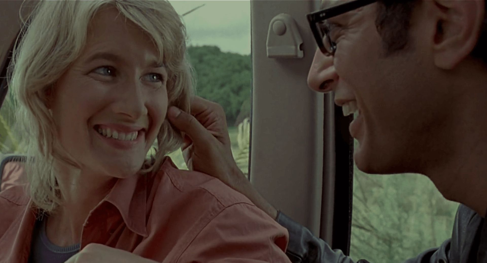

What's so great about discovery? It's a violent, penetrative act that scars what
it explores. What you call discovery, I call [it]
it explores. What you call discovery, I call [it]
the rape of the natural world.

1
Into The
Wilderness
Wilderness
John Hammond created an animal theme park called Jurassic Park. With techonological advancements, Hammond’s crew of scientists were able to clone extinct dinosaurs and plants through DNA replication. Due to an accident at the site, Hammond was advised by a lawyer named Donald Gennaro, representing Hammond’s investors to get experts to certify his park for safety. Dr. Alan Grant, Dr. Ellie Sattler and Dr. Ian Malcolm went as the experts to see the park.
2
Welcome to
Jurassic Park
Jurassic Park
As the group of scientists and theorist arrived at the island, they were very shock as they met living dinosaurs, upon their arrival. Hammond revealed that his scientists used the process of preserved ancient DNA from mosquitoes and with the use of frog DNA to fill in the missing genomes. The leading scientist metioned how interbreeding is not possible since all dinosaurs are genetically engineered as females. However, Malcolm disagrees with a theory that nature will overcome it sooner or later.
3

First Tour
Of The Park
Of The Park
With the introduction of Hammond’s grandchildren, Lex and Tim Murphy, the group and the children went on the first ever tour of the park. Hammond stayed back to oversee them from the control room. During the tour, no dinosaurs appeared, instead they encountered an ill dinosaur. However, as the weather show signs of getting worse, they decided to go back. They left without Sattler, as she stayed with the veterinarian and the dinosaur.
4

Calm Before
The Storm
The Storm
As the storm got worse, Dennis Nedry, the lead computer programmer, took the opportunity to shut down the entire security system of the park and secretly stole some dinosaur embryos to sell them to a rival corporation. The shut down affected the power too, thus leaving Genarro, Malcolm and Grant with the two kids stranded in the tour vehicles. To make matters worse, they stopped in front of the Tyrannosaurus rex compound which later in the film, the T-rex escapes and attacks the vehicles. While Gennaro got devoured by the T-rex, Malcolm got injured but survived and saved by the warden and Sattler. Grant and the kids were forced to flee for safety leading them towards the compound. Nedry got killed on his way to the docks to escape from the island with his stolen embryos.
5
Nature Found Its Way
As the storm passes, Grant and the kids found some broken egg shells on the following day. This made Grant realize what Malcolm predicted about nature overcoming the genetical engineered genders applied to the dinosaurs. Since the DNA of the frogs can change from male to female in a single-sex environment, thus Malcolm’s theory was right.
6
Raptors Out
On The Loose
On The Loose
As they decided to reboot the park’s system after what Nedry has done, they hope for the power to come back. Unfortunately, this led to free the Velociraptors in the process from their paddock. Sattler head out to the shed to turn the park system back and she successfully did it. Grant and the kids finally reached the visitor centre and Grant starts searchign for Sattler. Meanwhile, a Velociraptor tries to attack the children but thankfully, they evaded it and got reconnected with everyone to the control room. Another Velociraptor tries attack them in the room that leads the entire group cornered by two other raptors until the Tyrannosaurus arrives and kills all the raptors. This allowed them to escape out of the centre.
7
Rescue Is On
Their Way
Their Way
On their way towards the docks, Grant declares to Hammond that he wont be endorsing his park which Hammond agrees too. The group finally gets to the helicopter and tries to quickly get out of the island as soon as possible. In the helicopter, it portrays Grant with the two kids leaning towards him which Sattler appreciates as it shows that Grant is slowly liking kids than before. The film ends with the helicopter returning to the mainland during the sundown.
Primarily set in
Costa Rica
and in a fictional island called Isla Nublar
Other locations presented are within the amusement park
Setting

Meet the cast of the movie starring
Sam Neill
as Alan Grant, Laura Dern
as Ellie Sattler and many more
Characters